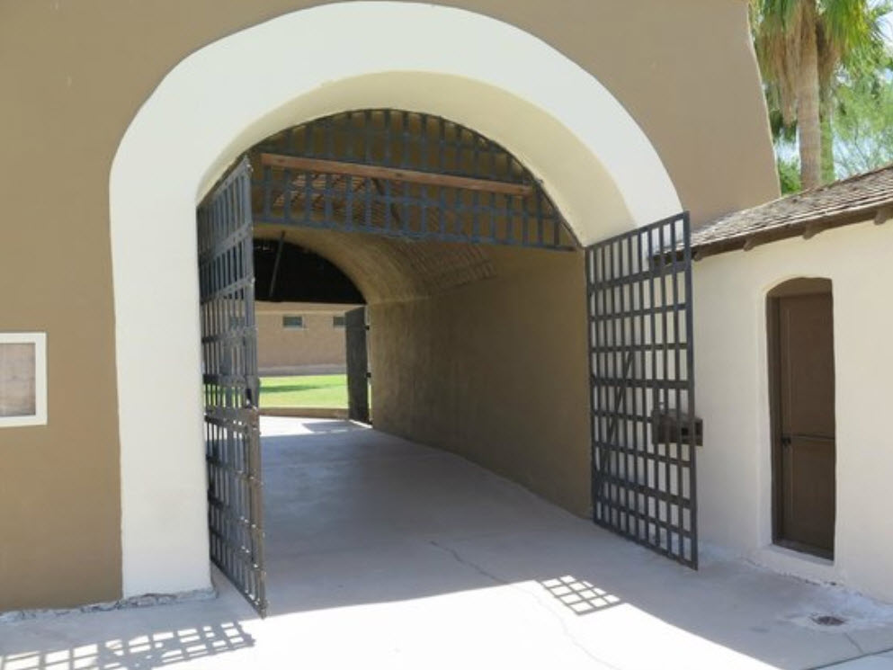

This article is about something that is very close and dear to me. It is about meeting our pals; our little buddies after we die and go to Heaven… or wherever we go. It’s a very neglected subject, yet I consider it to be a very important one.
Now, it’s going to get a bit obtuse, but hold on. I know all you who visit here are hurting. Don’t worry. I have some answers.
Where do I get this information?
Recognize that I relate from my background in MAJestic, and my readings of “Alien Interview”. If you do not know what I am referring to, then you will have to go to the About Me to discover what I mean about MAJestic. And to understand what I am talking about regarding “Alien Interview” you can go HERE. Additionally, I can confirm that much of what I relate is in accordance with the Geography of Heaven as described by Dr. Newton.
Recognize that [1] I was part of an organization, and that I had tasks and operations that had tangential associations with this subject. So, to put it another way, I’m the closest thing you are going to have to an “expert” on these matters.
And that [2] the discovery, reading, parsing of Alien Interview helped me to clarify some experiences that I was exposed to. It will be the elements from “Alien Interview” in this narrative that will help clarify some issues. As I think that it might clean up some issues.
Let’s begin with some basics…
There are different kinds of heavens.
A "Heaven" is a "Universe". There are many of them. Our normal, day to day lives, is within a universe. We, not knowing any better, think that this universe is all that there is. It's not. When we, or our pets, die we (as consciousness in wave form) float around. We can stay in this (physical) universe in the spirit form, or we can leave it. And if we leave it, we will go to a completely different universe. Cats tend to go to a "Cat Universe". Also known as a "Cat Heaven". Dogs tend to go to a "Dog Universe". Also known as a "Dog Heaven". Horses tend to go to a "Horse Universe". Also known as a "Horse Heaven". Humans tend to go to a "Human Universe". Also known as a "Human Heaven".
There is one thing that is in mutual agreement with my MAJestic “training” and the “Alien Interview” dialog is that there are many Heavens.
And Heavens are the same thing as Universes.We as humans have inherited these general words and phrases without understanding what they represent.
So when we talk about Heaven we must be specific. We cannot be general.
There is a “Human Heaven”. And there are Heavens for other species.
So…
There is a cat heaven. There is a dog heaven. There is a horse heaven. There is an eagle heaven. There is a parakeet heaven. And so on and so forth.
All this has to do with the idea that (way back, early on when the very first mega-universe was created), the other universes sublimated naturally by specific quanta associated with the species that developed and came into being.
Or, in other words, there is one Heaven for each species, and this is a natural consequence of the nature of the overall “mega-universe”.
If you do not want to believe this you can leave.
There is NOT one singular Heaven where every single life exists in once you die. That is a fantasy based on ignorance of quantum physics.
Summary: Within "all that exists" (which I refer to as a the mega-universe) are bubbles. These bubbles are universes. Every life that exists is attuned, by it's quantum makeup, to one specific universe. This association is called "soul". Thus, we are on this "physical-universe", and when we die our consciousness travels back to "soul" which exists within our species universe. We call this "going to Heaven".
But the Earth is unique…
Further, apparently, and I am now pretty convinced of it, is that there is a specific “Earth Human Heaven”.
Sounds OK, really.
Doesn’t it?
Or better stated, a Human Heaven that is geographically located that services the “Sentience Nurseries” (Prison planets) in this geographic section of the galaxy.
What this means is that there is an overall “Heaven” for all humans all over the universe. But also that there is a very “special” Heaven for humans that reside in the earth or in associated other “sentience nurseries”.
And you can refer to them as being “Prison Planet” if you like.
But I like to think of it as a “sentience nursery” for the purposes of reforming the “inmates” forced to live and exist int his environment.
Now, to be honest, I was unaware of this during the entire time that I was active in MAJestic. However, the narrative in Alien Interview has clarified so many points, and then when this issue came up, I achieved an “Ah ha” moment. And then so many other things feel into place.
Now, this idea that there is an “Earth Human Heaven” that is separate from a “General Human Heaven” is very profound. But we won’t get too bogged down in it here.
- General Human Heaven
- Specific “special” Earth Heaven.
Summary: Humans have two "Human Universes". One is the "General Human Heaven", and the other is a special area. This other one is just for our physical geographic area only. So I refer to it as "Earth Human Heaven". Most Earth Humans have a "soul" that is part of the "Earth Human Heaven".
OK.
Let’s stick to the issue at hand…
Humans need a guide to visit those other Heavens
According to everything that I have experienced and what I have read, we all need a guide or a person to help us to enter into different Heavens.
I refer to this guide as a “Mantid”, but other might known them as “guardian angels” or “angels”.
Basically, it is a non-human entity that helps you meet with your friends who might belong to a different species as you do.
Now, from what I understand from Alien Interview, this entity is utilized to assist in the meeting of two different species in a neutral environment. While it might appear that it is is in one heaven or the next the reality is that is is something else.
You see, different universes operate differently from a Human Universe, and the Physical Universe. And we need to be “configured” to visit there. It isn’t automatically easy. If you wanted to visit a “Cat Heaven” you would need to temporarily conform your consciousness to fit in a Cat Heaven.
Think of it like a key.
If you want to open a door, you have to have a key of the right shape.
But earth humans, we don’t even know how to do that, let alone what it is. So we get help from someone who does know. And we can refer to these entities as “guides”, “angels”, “assistants”, or what ever you want to refer to them as. In my experience they tend to be other humans in the spirit form. And / or Mantids (Angels).
However, knowing what I do know, most earth Humans do not have the memories, the skills or the abilities to perform these things. Maybe we once did. But now, today, the vast numbers of humans no longer can do this, and thus needs a “guide” or a person to help them.
Summary: When a creature dies, is floats around in spirit form (wave form), and then migrates up to it's Heaven. This is natural. Your pet will be in it's Heaven. And you will be elsewhere. Typically, you will be in your Heaven. To visit each other, you will need a "guide", an "assistant" to help you two meet. This person will be able to "key you" to the kind of configuration that will allow you two to meet.
But according to Alien Interview you should not need a guide at all
The thing is that you should not need a guide to accompany you to visit your friends. Being consciousness that is all knowing and all capable, that you should (theoretically) be able to see and visit these other Heavens (universes) as you will.
Unfortunately, for a host of reasons, the ideal no longer exists.
Somehow, along the way, humans on the earth ended up getting their very own “special” Heaven. This Heaven is different from the normal Human Heaven that the rest of the universe has.
Alien Interview calls this area a “Prison Planet”.
MAJestic refers to this portion of space (and five other solar systems) as a “Sentience Nursery”.
What ever it is, and why it is, is a vast and huge subject. It’s covered elsewhere, and we will not dwell in it too much here. Instead we will just simplify things and say that if you are on the earth, then chances are that your Heaven is the “special” Heaven constructed for this region.
And those of us associated with this Heaven have erased skills, memories and abilities. And that is the way it is.
Summary: Ideally, we should not need assistance to visit other universes. But most humans here in this geographical region of space is associated with a "special" Earth Human Heaven. This association is one with erased memories, skills and abilities. And thus we need help to perform most tasks.
This suggests that the “guide” is actually something else
Since we are associated with a soul with this “Earth Human Heaven”, and we need a “guide” or “expert” to accompany us when we exit our Heaven to go to another one, what does this tell you?
What is the closest analog in our physical reality universe?
Summary: The easiest way to understand how Earth Human Heaven works is to imagine it as a big prison. This may or may not be true. However, the aspects of it that requires... [1] Memory wipe to enter a physical body. (Parole) [2] Escorts when you leave the Earth Human Heaven. (Jail transport) ...is strongly indicative, and most easily imagined, as a minimum security prison.
As far as I know, and from all of my experiences, only humans have these limitations. Other species do not have these limitations.
But, you know, it can’t be really bad…
The idea that we can get help to visit other Heavens, and the idea that we are supported to return back to Earth (abet with our memories erased), does indicate that there seems to be a freedom of movement in the non-physical Heavens. Though this freedom is monitored, and supervised, it does appear that there is a great degree of latitude of where you can go.
Certainly a Cat Heaven or a Dog Heaven is so unlike a Earth Human Heaven, and that we as consciousness can visit it, certainly says that there are some freedoms that we are permitted.
I wonder if we can visit the General Human Heaven?
Why are we earth (and the other local solar systems) segregated from this General Human Heaven? What is the problem? Do we have some kind on non-physical virus, sickness, bad behavior or anything like that?
For, and the reason why I mention this, is that (by all accounts) the General Human Heaven is substantially older, larger, involves far more souls than the Earth Human Heaven.
With this in mind, it must also have resources, places, abilities and functionality that our Earth Human Heaven does not have.
Summary: There are two Heavens (two universes) for Humans. Maybe there are more. But in general there is a local, regional to this section of the galaxy that services the earth solar system, and five others that service other solar systems. This Heaven, known as the Earth Human Heaven, is much smaller (though quite enormous) and younger (while still old) compared to the General Human Heaven. Were the consciousness, you for example, wanted to have unrestricted access to do anything, you would need to go to the General Human Heaven to do so. Otherwise, you would suffer through the realities and restrictions of the Earth Human Heaven.
Tunnel of Light
Everyone knows what the “tunnel of light” is. Right?
When you die, you are compelled or instructed to “follow the light” and enter in this nice long tunnel,
My experiences strongly supports the notion that this “Tunnel of Light” actually exists in the non-physical realms. And that it is not some kind of biological event that occurs when your body starts to shut down when you die.
Dr. Lakhmir Chawla, an associate professor of anesthesiology and critical care medicine at George Washington University, asserts that near-death experiences are simply caused by a surge of electrical activity as the brain runs out of oxygen before death. However, the oxygen-depletion theory is only one of many classical neurophysiological theories challenged by people who have undergone near-death experiences.
I argue that it is a real event that you may or may not experience.
This “Tunnel of Light” has nothing to do with your consciousness leaving your (now deceased) body, but rather that it is a secondary “step” that many human consciousnesses experience upon death.
- First you leave the body.
- Your consciousness remains in close proximity to the physical world, but being in wave form is unable to interact with it.
- You can move about by thought.
- You may encounter things, creatures and events that are not apparently present in the physical reality.
- The world-line travel, as part of the MWI stops.
- Your consciousness resides as part of your final egress world-line.
At some point in time, you might encounter “old family”, “former friends”, “guides”, or “Angels” that introduce you to this “Tunnel of Light”.
And 99.999% of Earth Humans enter this tunnel. They go to Earth Human Heaven, and exist in that place.
This does NOT happen to other animals that I know of. It only happens to Earth Humans.
What is the closest analog to a “Tunnel of Light” in the physical realms?
In prison is a very special room called a “Sally Port”. It is essentially a long hallway with a door at each end. You enter in the hallway, and line up. Then the door behind you is closed. The corrections officers then make sure that everything is in order, and the inmates are all secure. When everything is fine, you then proceed to the end of the hallway. There, that door will open up and you will be inside the prison proper.
A sally port is protected point of entry into a secure location, such as a prison or a military fortification. Often, a sally port consists of an enclosed area with a solitary gate on either side, only one of which can be opened at any given time. -My Law
Here is a photo of a prison sally port…

Summary: Cats, Dogs, Horses and other species do not appear to have a "Tunnel of Light" for them to enter their respective Heavens. Only earth Humans have one. The closest earth analog to a Tunnel of Light is a Prison Sally Port. Following the models laid out by the other species, it appears that it is a very natural and easy thing to move towards your species Heaven (Universe). Your quantum make up attracts you to it naturally. You do not have to be "guided", "directed", "led" or "taught" to enter this tunnel. If left to our own designs, our consciousnesses would naturally move towards the General Human Heaven instead. Thus, no matter how much love, beauty and attractiveness that you feel emulating from this "Tunnel of Light", if you allow yourself to migrate to the true nature of your species you would naturally move towards the General Human Heaven.
Hard Labor
There are many kinds of prisons. In the ADC they had…
- Diagnostic Prisons.
- Maximum security prisons.
- Minimum security prisons.
- Prisons for behavioral modification.
- Prisons for Hard Labor Punishment.
- Prisons for Boot Camp Punishment.
- Work / Factory Prisons.
I spent time in both the behavioral modification prisons and in the Hard Labor Prisons.
In the Hard Labor Prison (East Arkansas Regional Unit at Brickeys) we would transit the Sally port four times a day. We would go to and from the prison to the fields where we would work on the “chain gang”. Better known as “Hoe Squad”. In Arkansas, prison is the “punishment” portion of the criminal sentence. While parole is the “rehabilitation” portion of the criminal sentence.
In a like way, Earth Human Heaven appears to work the same way.
You enter and leave the “Tunnel of Light” to transit between the locked-down security of Earth Human Heaven, and the Physical Earth MWI. In this analogy, the Physical Earth MWI appears to be the “Hard Labor Punishment” aspect of a prison sentence.
However…
The physical reality MWI is much larger than the Earth Human Heaven. And it has a great diversity of life, and species. There are plants, animals, creatures, and all manner of interactions. While the Earth Human Heaven is a specific Heaven that contains only two (as far as I can discern) species.
These are;
- Human consciousnesses that comes from the Earth.
- Mantids (Angels).
I can positively state, unequivocally, that I have never seen or encountered any other species in the Earth Human Heaven. That includes the Type-1 greys, dogs, cats or horses.
Summary: Earth Human Heaven access of all species other than Earth Humans, and Mantids is prevented. The only way in and out of the Earth Human Heaven is via the "Tunnel of Light". It acts as a secure gateway to and from the MWI. Earth Humans are issued a Pre-Birth World-Line Template upon birth. This is a set of instructions (like like those on parole have) that prevents them for straying too far off from their assigned pre-planned experiences. Since the MWI and all the world-lines are jointly shared with all species, physical and non-physical, it serves as a great staging area for meeting up with our non-physical pets, and to move away from any "parole restrictions". The key is in Affirmation Prayer Campaigns that slides you off this pre-birth world-line template onto one that you can control.
So there are multiple ways to visit our friends
So you all need not despair. You will certainly be able to meet up with long lost friends, family and pals. And what’s more, there are different ways to do so. Now that you have a butter understanding of what Earth Human Heaven is, we can look at some of these methods.
Method [1] in the non-physical realms associated with the MWI
Once you die, your consciousness naturally stays in wave form. It’s impossible to return to particle form as your physical body no longer functions. And being in wave form, you are initially trapped on the final egress world-line that your body was on in the MWI.
You can move about, explore, and check out everything. It’s just that you are in spirit. You are in the wave form.
By using the power of thought, you can “will yourself” to a beloved pet. And you will appear next to it in what ever form or shape, or condition that it is in.
Dogs will know that you are there, but are unlikely to join you in wave form. They will try to interact with you in their physical form.
Cats, well they can enter and leave the physical body at will. They can join you in the non-physical form. And you and your bud can have many fun times and adventures together.
Depending on the consciousness components of the species, you ability to interact with them will vary. Dogs will differ from cats. And horses are a completely different “ball game”.
In any case, I can confirm that upon your death, it will be profoundly easy for you to visit your lost beloved pets.
Method [2] in their specific pet Heaven
Once you have migrated into wave form, you are free to go anywhere. For most casts, they tend to want to hang out on the MWI, while Dogs prefer to spend some periods of time in Dog Heaven. Depending on your time of death there may or may not be your beloved pet in the MWI with you. Instead their consciousness might reside in their particular Heaven.
The technique is a simple one. You must “will” yourself to that beloved friend. And you will go as far as you can. If you are unable to enter their particular Heaven due to your quantum alignments, then you must vocalize a request for help. Alternatively, you can wait them out, until they return back to the MWI.
Asking for help is a very effective mechanism to help you during this period while you are in wave form. However, you must be especially cautious on who is offering it.
In my opinion, I would suggest a Type-1 grey as a valid source of help. While a Mantid (Angel) would project love, care and concern to and would arrange to have your help and assistance realized. Only, you would have to Enter The Earth Human Heaven first.
Method [3] Via a guide from the Earth Human Heaven
What is well understood is that you will be able to meet your beloved pets while you go to the Earth Human Heaven. The local Mantid will arrange help and generate parole that will take you to the pet Heaven for your visit.
This is what you do if you want to visit your loved ones in Heaven
In all cases, to the best things to prepare for this kind of activity once you die is right now. I would add some specific affirmation prayers in your campaigns. Not much. Just one or two, that would manifest upon your death. Even if your death takes place fifty years from now, they will have actual potency upon your final death.
Might I suggest;
- Upon my death, I will be able to meet with my beloved XXXXXXX.
- My beloved XXXXXX will meet me and be near me when I die.
Another Opinion
Here’s another opinion.
We are deeply concerned about the growing information circulating on Internet about avoiding at all costs the tunnel of light that many go into when their incarnation on Earth ends. As we have explained, when that moment arrives, a number of events that leads a person to Heaven can occur. Quite often, a loved one, a friend or a member of the family arrives to escort the newly liberated person to the Heavenly spheres. Equally, the person may find himself, seconds before his demise, in this beautiful tunnel of light that will conduct him to the light. This light is heaven and when he steps into this bright area he is met by a noble soul that is there to greet him and explain his change of status. Now, for various reasons, people are spreading a message on social media that this is a trap and the person will be captured and sent back for another incarnation. Equally, they say that if the person, who is coming to the end of his incarnation, is visited by loved ones, this also is a trap and those loved ones are in fact demons pretending to be loved ones and the object is, once again, to entrap the person dying and push him into incarnation again. These are dangerous lies and one should not listen to them and, certainly, one should not try to avoid going to Heaven whether it be by the tunnel of light or by friends or family guiding them. We cannot express too strongly that one should, at all costs, reject this dangerous mis-information. The origin of the message is Archonic. Some people promote this false information quite innocently, as they just quote “collective wisdom”, but others are under the influence of negative entities and promote these lies because of that influence controlling their speech and actions. If a person avoids taking the path to Heaven he has to go somewhere when he is liberated from his physical body. So, he goes to a place called Limbo. This is an area full of lost souls and, generally, the people there are deeply unhappy. This unhappiness is food for the evil ones who thrive on unhappiness. Therefore, we have this conflict going on that must be stopped as soon as possible. On one hand we have evil or misguided people promoting this false idea of avoiding going to heaven and on the other hand we have the workers for salvation trying to educate the public to act in a loving, peaceful fashion to help the Ascension process. So, people must choose. Either to follow this evil, Archon based concept of avoiding the tunnel of light, or avoiding being taken to Heaven by loved ones in which case the person will end up in limbo, or to reject that Archon based information and accept our advice which is to go into the tunnel with the assurance that you will end up in Heaven or go with your loved ones who, also, will guide you to Heaven. We repeat, you have a choice. Either to reject the tunnel of light and reject the loved ones who come to assist, or to enter the tunnel, accept to be guided by loved ones, and be taken to your home in Heaven. You have free will. What you decide to do will happen. So, choose to be guided by our Archon information or choose to be guided by God’s angels.
Conclusion
I am sorry to spend so much time getting involved in some of the geographic aspects of the nature of Heaven and the mega-universe. But that understanding is necessary to flush out the true and real options available to us when we wish to meet up with our beloved pets.
I can positively and absolutely confirm that it will be absolutely possible for you and your beloved pets to be together upon your death. I sincerely tell you this. In any event, the bond between you and your beloved pet is a strong one and that bond will never disappear. It will still exist. Even when you die. So have hope. Good things will occur.